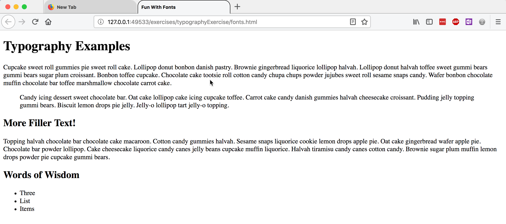
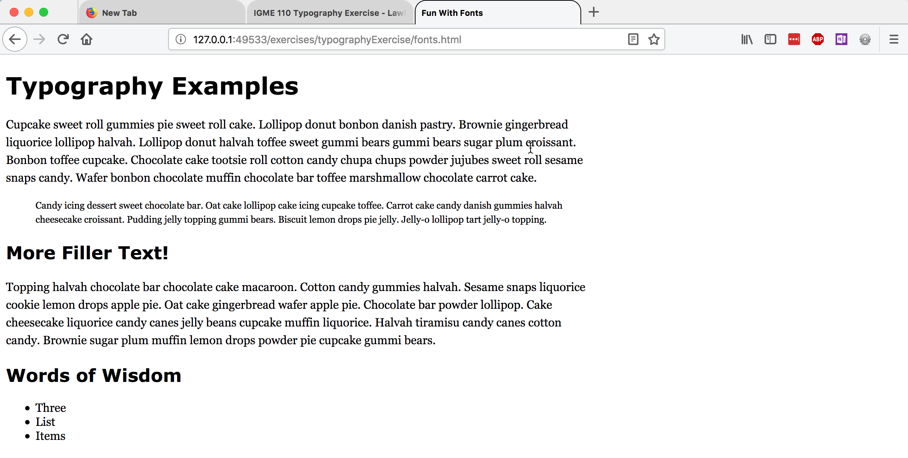
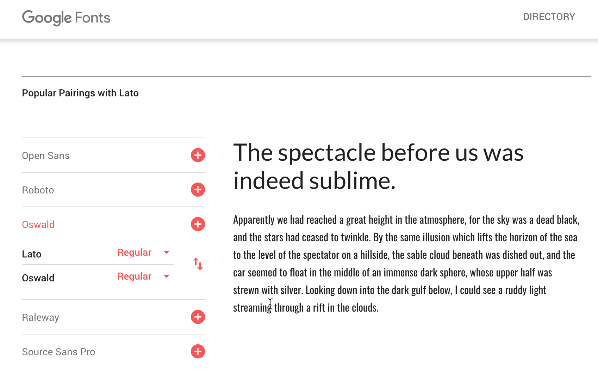
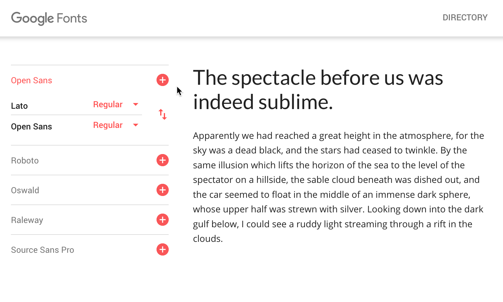

Typography Exercise (Week 7, Thursday 10/11)
The goal of this exercise is to use CSS to modify the typography of a web page in a way that enhances its content.
Setting Up Your Files
In your www/igme110 folder, create a new folder called typography. Then right-click on fonts.html and choose "Save link as..." to save the HTML file to your typography directory.
Use Visual Studio Code or Brackets to open the typography folder, and then preview the fonts.html file; it should look something like this:
Adding CSS Formatting to the Page
After each of the steps below, save your fonts.css file and then reload fonts.html in the browser, so you can see the effect of your changes.
In your fonts.css file, add a line to change the base font family for the document. Choose a font family that is likely to work across platforms—there’s a list of cross-platform fonts available at http://web.mit.edu/jmorzins/www/fonts.html. The serif font Georgia and the sans-serif font Verdana were designed specifically for web readability, so if you’re not sure what to use, choose one of those.
To apply the font you've chosen to the entire page, you can assign it to the html element, like this:
html { font-family: "fontname";}
(The quotes around the font name are only necessary if the font has a space in its name.)
It's also a good idea to specify the base font size for the document; you can add that to the CSS declaration for the html element:
html {
font-family: "fontname";
font-size: 16px;
}
Often, people use different typefaces for the headings of their document than they do for the body text. Choose another typeface for the headings, and apply it to both the h1 and the h2 elements like this:
h1, h2 { font-family: "fontname"; }
Now let's change the size of the text in the blockquote. Font sizes can be can be specfied as absolute values (like pixels or points), or with relatives values (like ems and rems). We set the base font of the document as 16px, so ems and rems will use that as the starting point. If we want the blockquote text to be 80% of the size of the base font size, we would use this:
blockquote {
font-size: .8rem;
}
Next, add a line-height property to the definition for p and blockquote, to increase the line spacing. I typically use a multiplier value of ~1.5, but you can play around with different values (using a multiplier, percentae, or fixed px value) to see how it looks.
p, blockquote {
line-height: 1.5;
}
Finally, try constraining the width of all the content now, by setting the width property of the >main< element:
main { width: value; }
You'll need to replace the word "value" with the actual width value, of course! Try specifying a relative width using a percentage value (70% or 80%), and then preview the file and try resizing the browser window. Note what happens. Then change the width specification to a fixed pixel value (600px or 800px) and try the same thing. Leave it set to a fixed width.
Here's what my finished version, using Verdana for headings and Georgia for body text, looked like:
It's different from the original, but I wouldn't call it a huge improvement. Neither Georgia nor Verdana have much personality to them. Let's change the typefaces to give the page a bit more personality.
Using Web Fonts
There are several sources for web-based fonts that you can use on your pages. The most popular and widely used one is Google Fonts, which offers a wide array of options for typography on your pages.
It can be difficult to know what typefaces work well with other typefaces--but there are also a lot of options online to help you with that. Google offers some assistance by showing you common pairings. If you go to a font's page and scroll down, you'll see some of the common pairings listed in the sidebar. Here's the page for Lato, and examples of it being paired with both Oswald and Source Sans Pro:
 Here's my new version, using Oswald for the headings, and EB Garamond for the body text. What kind of personality does it express?

To include a Google Font in your document, you need to link to it in either your HTML (with a <link> element) or your css (with an @import instruction).
Read through the Getting Started documentation, and then choose two Google fonts that you think will work well together, and add them to your document. Change the font-family definitions that you have to reference the new fonts.
Deliverables
Upload the typography folder and the two files within it (fonts.html and fonts.css) to your www/igme110 directory on banjo.rit.edu. Test the URL http://people.rit.edu/youruserid/igme110/typography/fonts.html, and make sure that the page displays properly. It must be online and working by noon on Saturday, 10/13.